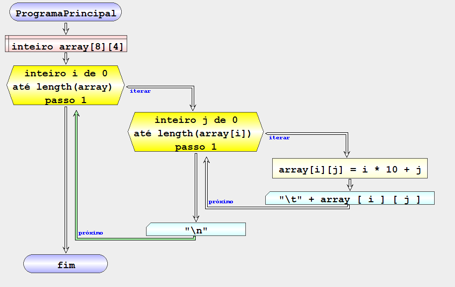
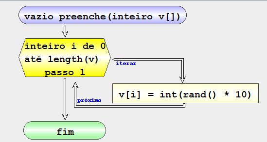

Defines an indexed variable in memory. Indexed variables are homogeneous sets of data that are accessible through indices.
Algorithmi allows defining the number of dimensions of the indexed variable that the user wants.
When defining a vector, the number of dimensions and the number of elements in each dimension are defined. Indexed variables are initialized with default values:
| Flowchart | en |
|---|---|
|
DEFINE *TYPE* *var* [*ex*]…[*ex*] |
| GAL | |
|---|---|
| BEGIN MAIN_PROGRAM_NAME
DEFINE INTEGER vetor SQUARE_OPEN 5 SQUARE_CLOSE ITERATE INTEGER i FROM 0 TO ELEMENTS_OF ROUND_OPEN vetor ROUND_CLOSE STEP 1 EXECUTE vetor SQUARE_OPEN i SQUARE_CLOSE SET i MULT 10 WRITE "\nVetor[" SUM i SUM "] = " SUM vetor SQUARE_OPEN i SQUARE_CLOSE END ITERATE END MAIN_PROGRAM_NAME |
|
| Flowchart | pseudocode |
 |
 |
| Result | |
 |
|
| Flowchart en-gb |
|---|
|  |
| Pseudocodigo |
 |
| Resultado |
 |
| Flowchart | |
|---|---|
 |
 |
| pseudocodigo | |
 |
|
| result | |
 |
|